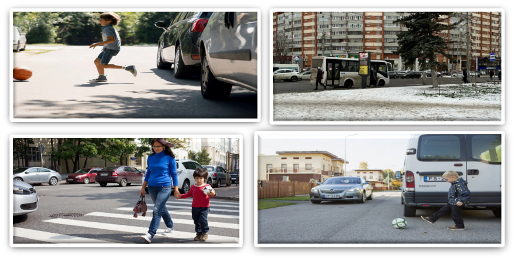
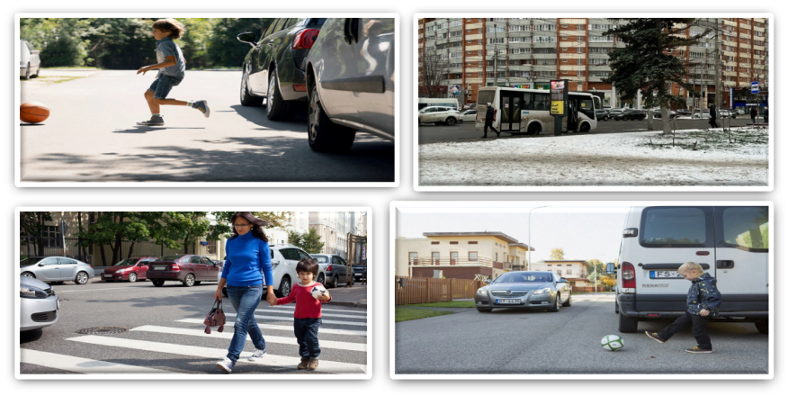

4.2 Avtomaktab o‘qituvchilarining xizmat jarayonida qo’llanadigan atama va tushunchalar
Bugungi kunlarda globallashuv sharoitida yuksak muomala odobi yanada muhim ahamiyatga ega. G‘arb madaniyatiga xos “ommaviy madaniyat” ta’siri va ijtimoiy aloqalar ayni avj olgan davrda bugungi yoshlarimiz, ayniqsa, haydovchilik kasbi bilan o‘z faoliyatini olib borayotgan shaxslar yuksak ma’naviy boyligimiz bo‘lgan Sharq madaniyati durdonalarini, axloq-odob, etika va estetikasini chuqur o‘rgansalar ayni muddao bo‘lardi. Buning uchun esa davlatimiz haydovchilardan yuksak ma’naviyat va ma’rifatli kasb egasi bo‘lishni talab etadi.
Haydovchi yuksak madaniyat sohibi tushunchasi keng qamrovli bo‘lib dastavval axloqiy, huquqiy, ma’naviy, intellektual, kasbga oid fazilatlarni o‘ziga jamlagan. Yuksak madaniyat tushunchasi muayyan tarzda quyidagi fazilatlarni ifodalaydi.
Ma’naviy-axloqiy fazilatlar: xizmat burchiga sadoqat, ozodalik, pokizalik, halollik, rostgo‘ylik, yaxshi xulq, xushfe’l, xushfe’llik, odob-axloq;
individual-psixologik fazilatlar: vazmin, irodali, yuqori intellektga ega bo‘lish, yangi bilimlarga intilish, fuqarolar bilan muomala madaniyatini namoyon qila olish, hayotga faol yondashish;
Vatanga sadoqat va vatanparvarlik tuyg‘ular: Vatanga muhabbat, o‘z vatani, xalqini sevish, uning tarixini, urf-odatlari, an’analarini bilish, boshqa millatlarni tili, dini va madaniyatini hurmat qilish, doimo Vatanni himoya qilishga, zarur bo‘lsa jonini fido qilishga tayyor bo‘lish, mustaqillik g‘oyalarini targ‘ib qila olish, Vatani va xalqiga sadoqat bilan xizmat qilish;
kasbga oid fazilatlar: professionallik, qonunlarga rioya etish, fuqarolarning huquq va qonuniy manfaatlarini hurmat qilish, tashabbuskorlik global internet tarmog‘i(AKT)dan foydalana olish, kasbga oid innovatsion texnologiyalarni bilish va ilg‘or xorijiy tajribadan xabardorlik, o‘z burchiga sodiqlik, mardlik, jasurlik, fidoyilik, mas’uliyat, qat’iyatlilik.
Haydovchilar birinchi navbatda yaxshi xulq egasi madaniyatli bo‘lmog‘i lozim. Yaxshi xulq ularning bezagi.
Yuksak huquqiy ong va huquqiy madaniyat fuqarolik jamiyatining shartlaridan biridir. Yuksak huquqiy ong fuqarolarimizning qonunlarni chuqur bilishini, qabul qilinayotgan qonun, farmon va qarorlardan xabardorligini bildiradi. Yuksak madaniyatli xodim o‘z ishining ustasi, kompetent bo‘lishi lozim.
Bu haydovchilardan o‘z ishini chuqur bilishni, ya’ni kompetent bo‘lishni taqozo qiladi. Kompetentlik kasbiy faoliyatni tashkil etishda zarur bo‘lgan bilim, ko‘nikma va malakaga ega bo‘lish, haydovchi tomonidan o‘z vazifasini bajarish jarayonida vujudga kelgan muammolarning to‘g‘ri yechimini topish, hamda qaror qabul qila olishdir.
Haydovchi uchun jamoat transporti bekatida turgan transport oldidan piyodaning to‘satdan chiqib qolishi ham o‘ta xavflidir. Shuning uchun hovlida va to‘xtash joyidan haydashda juda ehtiyot bo‘lish kerak.
To‘xtash joylaridan o‘tishda avtobus yoki trolleybusni oldi g‘ildiraklarini tagiga qarash kerak, agar piyoda o‘tayotgan bo‘lsa, oyog‘i ko‘rinadi buni yodingizda saqlashingiz kerak. Agar siz yo‘lda piyodani ko‘rsangiz quyidagi qoidaga amal qilishingiz kerak:
Mazkur qoidaga muvofiq yo‘lda xavfsiz sharoitlar yaratishni to‘liq o‘zingizga oling. Piyoda sizni ko‘rmaydi, eshitmaydi yoki harakat qilmaydi, vaziyatni yanada qiyinlashtiradi
Piyodalarning yo‘l qatnov qismidan o‘tish holatlari.
Haydovchilar faoliyatida so‘zlashuv madaniyatining ahamiyati Demak, so‘zlash odobi va madaniyat inson fazilatini belgilovchi asosiy omil ekan, binobarin, muomala odobida, inson bajarishi zarur bo‘lgan quyidagi qoidalarga e’tibor berishi zarur: Birinchidan, odob va ehtiyotlik bilan muomala eshitishdan hamma maqsad amalga oshadi. Muloyim so‘zlash, ochiq chehrali va shirin so‘zli bo‘lish; Ikkinchidan, inson biron narsadan jahli chiqib turganda, hech kim bilan so‘zlashmaslik, muomalada bo‘lmasligi zarur. Uchinchidan, suhbat, muomala jarayonida odamlardan chetda, uzoqroqda turish mumkin emas. To‘rtinchidan, kimki sizning savolingizga dag‘allik, qo‘pollik qilsa, xushmuomalalik va bosiqlik bilan javob qaytaring. Beshinchidan, kattaga hurmat, kichikka izzat ko‘rsating. Hech vaqt o‘z lavozimingiz bilan maqtanib obro‘yingizni to‘kmang. Oltinchidan, go‘zallikka go‘zallik bilan javob bering, sizning qabulingizda bo‘lgan fuqaro bilan do‘st bo‘lishga, uning ichki haridini bilishga harakat qiling, nizoli vaziyatni yuzaga keltirmang. Yettinchidan, siz bilan munosabatda bo‘layotgan shaxs bilan faqat ezgulik, yaxshilik haqida so‘z yuritingki, toki siz ishdan ketganingizda ham, u kishida yaxshi taassurotlar qolsin. Sakkizinchidan, hech vaqt siz bilan suhbatda bo‘lgan kishidan tamagir bo‘lmang va shu holatlarga yaqin so‘zlarni ishlatmang, aks holda sizdan hafsalasi pir bo‘ladi. To‘qqizinchidan, va’da bermang, va’da berdingizmi uni bajaring. O‘ninchidan, inson manfaati yo‘lida astoydil xizmat qiling, shunda xalq sizning quvonchingizga sherik, og‘ir kunlaringizda hamdard bo‘ladi. Haydovchining axloqi deganda, haydovchi boshqa harakat qatnashchilariga yordam berish uchun Qoidalar bo‘yicha berilgan ustuvorlikdan foydalanmaydigan yo‘l harakati vaziyati tushuniladi. Tarbiyali odamning oddiy insoniy fazilati – haydovchi etikasining ajralmas qismidir. Oxir oqibat, har bir haydovchi doimo qarama-qarshi vaziyatda ham bo‘ladi: bu yerda u ustunlikka ega, lekin u yo‘l berdi. Shuning uchun xushmuomala haydovchi avtomobilni o‘ngga olib, uni quvib o‘tayotganga, boshqa haydovchini hovlidan chiqib olishiga, chorrahadan tashqari joylarda oldidan chapga burilishiga, o‘z oldida qayta tizilishiga, tajribasiz haydovchiga yo‘lda zarur holatni egallab olishiga imkon beradi. Haydovchining etikasi bilan haydash madaniyati bir-biri bilan ajralmas bog‘liq bo‘lib, u quyidagilardan iborat bular harakat qilish qoidalari, yo‘l harakati qoidalari talablarini qat’iy bajarish, haydovchi transport vositasini belgilangan cheklashdan oshmaydigan tezlik bilan amalga oshirishi kerak, bunda harakat jadalligi, transport vositasi va yukning xususiyatlari va holati, yo‘l va meteorologiya sharoit-lari, xususan harakat yo‘nalishidagi ko‘rinishini e’tiborga olishi va haydovchi quvib o‘tishni boshlashdan oldin, chiqmoqchi bo‘lgan yo‘l bo‘lagi yetarli masofada bo‘sh bo‘lganligiga va o‘zib ketish jarayonida yo‘l harakatining boshqa ishtirokchilarini harakatiga xavf tug‘dirmasligiga va to‘siq bo‘lmasligiga ishonch hosil qilishi kerak. Bugungi kunlarda globallashuv sharoitida yuksak muomala odobi yanada muhim ahamiyatga ega. G‘arb madaniyatiga xos “ommaviy madaniyat” ta’siri va ijtimoiy aloqalar ayni avj olgan davrda bugungi yoshlarimiz, ayniqsa, haydovchilik kasbi bilan o‘z faoliyatini olib borayotgan shaxslar yuksak ma’naviy boyligimiz bo‘lgan Sharq madaniyati durdonalarini, axloq-odob, etika va estetikasini chuqur o‘rgansalar ayni muddao bo‘lardi. Buning uchun esa davlatimiz haydovchilardan yuksak ma’naviyat va ma’rifatli kasb egasi bo‘lishni talab etadi. Haydovchi yuksak madaniyat sohibi tushunchasi keng qamrovli bo‘lib dastavval axloqiy, huquqiy, ma’naviy, intellektual, kasbga oid fazilatlarni o‘ziga jamlagan. Yuksak madaniyat tushunchasi muayyan tarzda quyidagi fazilatlarni ifodalaydi. Ma’naviy-axloqiy fazilatlar: xizmat burchiga sadoqat, ozodalik, pokizalik, halollik, rostgo‘ylik, yaxshi xulq, xushfe’l, xushfe’llik, odob-axloq; individual-psixologik fazilatlar: vazmin, irodali, yuqori intellektga ega bo‘lish, yangi bilimlarga intilish, fuqarolar bilan muomala madaniyatini namoyon qila olish, hayotga faol yondashish; Vatanga sadoqat va vatanparvarlik tuyg‘ular: Vatanga muhabbat, o‘z vatani, xalqini sevish, uning tarixini, urf-odatlari, an’analarini bilish, boshqa millatlarni tili, dini va madaniyatini hurmat qilish, doimo Vatanni himoya qilishga, zarur bo‘lsa jonini fido qilishga tayyor bo‘lish, mustaqillik g‘oyalarini targ‘ib qila olish, Vatani va xalqiga sadoqat bilan xizmat qilish; kasbga oid fazilatlar: professionallik, qonunlarga rioya etish, fuqarolarning huquq va qonuniy manfaatlarini hurmat qilish, tashabbuskorlik global internet tarmog‘i(AKT)dan foydalana olish, kasbga oid innovatsion texnologiyalarni bilish va ilg‘or xorijiy tajribadan xabardorlik, o‘z burchiga sodiqlik, mardlik, jasurlik, fidoyilik, mas’uliyat, qat’iyatlilik. Haydovchilar birinchi navbatda yaxshi xulq egasi madaniyatli bo‘lmog‘i lozim. Yaxshi xulq ularning bezagi. Yuksak huquqiy ong va huquqiy madaniyat fuqarolik jamiyatining shartlaridan biridir. Yuksak huquqiy ong fuqarolarimizning qonunlarni chuqur bilishini, qabul qilinayotgan qonun, farmon va qarorlardan xabardorligini bildiradi. Yuksak madaniyatli xodim o‘z ishining ustasi, kompetent bo‘lishi lozim. Bu haydovchilardan o‘z ishini chuqur bilishni, ya’ni kompetent bo‘lishni taqozo qiladi. Kompetentlik kasbiy faoliyatni tashkil etishda zarur bo‘lgan bilim, ko‘nikma va malakaga ega bo‘lish, haydovchi tomonidan o‘z vazifasini bajarish jarayonida vujudga kelgan muammolarning to‘g‘ri yechimini topish, hamda qaror qabul qila olishdir. Haydovchi uchun jamoat transporti bekatida turgan transport oldidan piyodaning to‘satdan chiqib qolishi ham o‘ta xavflidir. Shuning uchun hovlida va to‘xtash joyidan haydashda juda ehtiyot bo‘lish kerak. To‘xtash joylaridan o‘tishda avtobus yoki trolleybusni oldi g‘ildiraklarini tagiga qarash kerak, agar piyoda o‘tayotgan bo‘lsa, oyog‘i ko‘rinadi buni yodingizda saqlashingiz kerak. Agar siz yo‘lda piyodani ko‘rsangiz quyidagi qoidaga amal qilishingiz kerak: Mazkur qoidaga muvofiq yo‘lda xavfsiz sharoitlar yaratishni to‘liq o‘zingizga oling. Piyoda sizni ko‘rmaydi, eshitmaydi yoki harakat qilmaydi, vaziyatni yanada qiyinlashtiradi  Piyodalarning yo‘l qatnov qismidan o‘tish holatlari. Haydovchilar faoliyatida so‘zlashuv madaniyatining ahamiyati Demak, so‘zlash odobi va madaniyat inson fazilatini belgilovchi asosiy omil ekan, binobarin, muomala odobida, inson bajarishi zarur bo‘lgan quyidagi qoidalarga e’tibor berishi zarur: Birinchidan, odob va ehtiyotlik bilan muomala eshitishdan hamma maqsad amalga oshadi. Muloyim so‘zlash, ochiq chehrali va shirin so‘zli bo‘lish; Ikkinchidan, inson biron narsadan jahli chiqib turganda, hech kim bilan so‘zlashmaslik, muomalada bo‘lmasligi zarur. Uchinchidan, suhbat, muomala jarayonida odamlardan chetda, uzoqroqda turish mumkin emas. To‘rtinchidan, kimki sizning savolingizga dag‘allik, qo‘pollik qilsa, xushmuomalalik va bosiqlik bilan javob qaytaring. Beshinchidan, kattaga hurmat, kichikka izzat ko‘rsating. Hech vaqt o‘z lavozimingiz bilan maqtanib obro‘yingizni to‘kmang. Oltinchidan, go‘zallikka go‘zallik bilan javob bering, sizning qabulingizda bo‘lgan fuqaro bilan do‘st bo‘lishga, uning ichki haridini bilishga harakat qiling, nizoli vaziyatni yuzaga keltirmang. Yettinchidan, siz bilan munosabatda bo‘layotgan shaxs bilan faqat ezgulik, yaxshilik haqida so‘z yuritingki, toki siz ishdan ketganingizda ham, u kishida yaxshi taassurotlar qolsin. Sakkizinchidan, hech vaqt siz bilan suhbatda bo‘lgan kishidan tamagir bo‘lmang va shu holatlarga yaqin so‘zlarni ishlatmang, aks holda sizdan hafsalasi pir bo‘ladi. To‘qqizinchidan, va’da bermang, va’da berdingizmi uni bajaring. O‘ninchidan, inson manfaati yo‘lida astoydil xizmat qiling, shunda xalq sizning quvonchingizga sherik, og‘ir kunlaringizda hamdard bo‘ladi. Haydovchining axloqi deganda, haydovchi boshqa harakat qatnashchilariga yordam berish uchun Qoidalar bo‘yicha berilgan ustuvorlikdan foydalanmaydigan yo‘l harakati vaziyati tushuniladi. Tarbiyali odamning oddiy insoniy fazilati – haydovchi etikasining ajralmas qismidir. Oxir oqibat, har bir haydovchi doimo qarama-qarshi vaziyatda ham bo‘ladi: bu yerda u ustunlikka ega, lekin u yo‘l berdi. Shuning uchun xushmuomala haydovchi avtomobilni o‘ngga olib, uni quvib o‘tayotganga, boshqa haydovchini hovlidan chiqib olishiga, chorrahadan tashqari joylarda oldidan chapga burilishiga, o‘z oldida qayta tizilishiga, tajribasiz haydovchiga yo‘lda zarur holatni egallab olishiga imkon beradi. Haydovchining etikasi bilan haydash madaniyati bir-biri bilan ajralmas bog‘liq bo‘lib, u quyidagilardan iborat bular harakat qilish qoidalari, yo‘l harakati qoidalari talablarini qat’iy bajarish, haydovchi transport vositasini belgilangan cheklashdan oshmaydigan tezlik bilan amalga oshirishi kerak, bunda harakat jadalligi, transport vositasi va yukning xususiyatlari va holati, yo‘l va meteorologiya sharoit-lari, xususan harakat yo‘nalishidagi ko‘rinishini e’tiborga olishi va haydovchi quvib o‘tishni boshlashdan oldin, chiqmoqchi bo‘lgan yo‘l bo‘lagi yetarli masofada bo‘sh bo‘lganligiga va o‘zib ketish jarayonida yo‘l harakatining boshqa ishtirokchilarini harakatiga xavf tug‘dirmasligiga va to‘siq bo‘lmasligiga ishonch hosil qilishi kerak.
Piyodalarning yo‘l qatnov qismidan o‘tish holatlari.
Haydovchilar faoliyatida so‘zlashuv madaniyatining ahamiyati Demak, so‘zlash odobi va madaniyat inson fazilatini belgilovchi asosiy omil ekan, binobarin, muomala odobida, inson bajarishi zarur bo‘lgan quyidagi qoidalarga e’tibor berishi zarur: Birinchidan, odob va ehtiyotlik bilan muomala eshitishdan hamma maqsad amalga oshadi. Muloyim so‘zlash, ochiq chehrali va shirin so‘zli bo‘lish; Ikkinchidan, inson biron narsadan jahli chiqib turganda, hech kim bilan so‘zlashmaslik, muomalada bo‘lmasligi zarur. Uchinchidan, suhbat, muomala jarayonida odamlardan chetda, uzoqroqda turish mumkin emas. To‘rtinchidan, kimki sizning savolingizga dag‘allik, qo‘pollik qilsa, xushmuomalalik va bosiqlik bilan javob qaytaring. Beshinchidan, kattaga hurmat, kichikka izzat ko‘rsating. Hech vaqt o‘z lavozimingiz bilan maqtanib obro‘yingizni to‘kmang. Oltinchidan, go‘zallikka go‘zallik bilan javob bering, sizning qabulingizda bo‘lgan fuqaro bilan do‘st bo‘lishga, uning ichki haridini bilishga harakat qiling, nizoli vaziyatni yuzaga keltirmang. Yettinchidan, siz bilan munosabatda bo‘layotgan shaxs bilan faqat ezgulik, yaxshilik haqida so‘z yuritingki, toki siz ishdan ketganingizda ham, u kishida yaxshi taassurotlar qolsin. Sakkizinchidan, hech vaqt siz bilan suhbatda bo‘lgan kishidan tamagir bo‘lmang va shu holatlarga yaqin so‘zlarni ishlatmang, aks holda sizdan hafsalasi pir bo‘ladi. To‘qqizinchidan, va’da bermang, va’da berdingizmi uni bajaring. O‘ninchidan, inson manfaati yo‘lida astoydil xizmat qiling, shunda xalq sizning quvonchingizga sherik, og‘ir kunlaringizda hamdard bo‘ladi. Haydovchining axloqi deganda, haydovchi boshqa harakat qatnashchilariga yordam berish uchun Qoidalar bo‘yicha berilgan ustuvorlikdan foydalanmaydigan yo‘l harakati vaziyati tushuniladi. Tarbiyali odamning oddiy insoniy fazilati – haydovchi etikasining ajralmas qismidir. Oxir oqibat, har bir haydovchi doimo qarama-qarshi vaziyatda ham bo‘ladi: bu yerda u ustunlikka ega, lekin u yo‘l berdi. Shuning uchun xushmuomala haydovchi avtomobilni o‘ngga olib, uni quvib o‘tayotganga, boshqa haydovchini hovlidan chiqib olishiga, chorrahadan tashqari joylarda oldidan chapga burilishiga, o‘z oldida qayta tizilishiga, tajribasiz haydovchiga yo‘lda zarur holatni egallab olishiga imkon beradi. Haydovchining etikasi bilan haydash madaniyati bir-biri bilan ajralmas bog‘liq bo‘lib, u quyidagilardan iborat bular harakat qilish qoidalari, yo‘l harakati qoidalari talablarini qat’iy bajarish, haydovchi transport vositasini belgilangan cheklashdan oshmaydigan tezlik bilan amalga oshirishi kerak, bunda harakat jadalligi, transport vositasi va yukning xususiyatlari va holati, yo‘l va meteorologiya sharoit-lari, xususan harakat yo‘nalishidagi ko‘rinishini e’tiborga olishi va haydovchi quvib o‘tishni boshlashdan oldin, chiqmoqchi bo‘lgan yo‘l bo‘lagi yetarli masofada bo‘sh bo‘lganligiga va o‘zib ketish jarayonida yo‘l harakatining boshqa ishtirokchilarini harakatiga xavf tug‘dirmasligiga va to‘siq bo‘lmasligiga ishonch hosil qilishi kerak. Bugungi kunlarda globallashuv sharoitida yuksak muomala odobi yanada muhim ahamiyatga ega. G‘arb madaniyatiga xos “ommaviy madaniyat” ta’siri va ijtimoiy aloqalar ayni avj olgan davrda bugungi yoshlarimiz, ayniqsa, haydovchilik kasbi bilan o‘z faoliyatini olib borayotgan shaxslar yuksak ma’naviy boyligimiz bo‘lgan Sharq madaniyati durdonalarini, axloq-odob, etika va estetikasini chuqur o‘rgansalar ayni muddao bo‘lardi. Buning uchun esa davlatimiz haydovchilardan yuksak ma’naviyat va ma’rifatli kasb egasi bo‘lishni talab etadi. Haydovchi yuksak madaniyat sohibi tushunchasi keng qamrovli bo‘lib dastavval axloqiy, huquqiy, ma’naviy, intellektual, kasbga oid fazilatlarni o‘ziga jamlagan. Yuksak madaniyat tushunchasi muayyan tarzda quyidagi fazilatlarni ifodalaydi. Ma’naviy-axloqiy fazilatlar: xizmat burchiga sadoqat, ozodalik, pokizalik, halollik, rostgo‘ylik, yaxshi xulq, xushfe’l, xushfe’llik, odob-axloq; individual-psixologik fazilatlar: vazmin, irodali, yuqori intellektga ega bo‘lish, yangi bilimlarga intilish, fuqarolar bilan muomala madaniyatini namoyon qila olish, hayotga faol yondashish; Vatanga sadoqat va vatanparvarlik tuyg‘ular: Vatanga muhabbat, o‘z vatani, xalqini sevish, uning tarixini, urf-odatlari, an’analarini bilish, boshqa millatlarni tili, dini va madaniyatini hurmat qilish, doimo Vatanni himoya qilishga, zarur bo‘lsa jonini fido qilishga tayyor bo‘lish, mustaqillik g‘oyalarini targ‘ib qila olish, Vatani va xalqiga sadoqat bilan xizmat qilish; kasbga oid fazilatlar: professionallik, qonunlarga rioya etish, fuqarolarning huquq va qonuniy manfaatlarini hurmat qilish, tashabbuskorlik global internet tarmog‘i(AKT)dan foydalana olish, kasbga oid innovatsion texnologiyalarni bilish va ilg‘or xorijiy tajribadan xabardorlik, o‘z burchiga sodiqlik, mardlik, jasurlik, fidoyilik, mas’uliyat, qat’iyatlilik. Haydovchilar birinchi navbatda yaxshi xulq egasi madaniyatli bo‘lmog‘i lozim. Yaxshi xulq ularning bezagi. Yuksak huquqiy ong va huquqiy madaniyat fuqarolik jamiyatining shartlaridan biridir. Yuksak huquqiy ong fuqarolarimizning qonunlarni chuqur bilishini, qabul qilinayotgan qonun, farmon va qarorlardan xabardorligini bildiradi. Yuksak madaniyatli xodim o‘z ishining ustasi, kompetent bo‘lishi lozim. Bu haydovchilardan o‘z ishini chuqur bilishni, ya’ni kompetent bo‘lishni taqozo qiladi. Kompetentlik kasbiy faoliyatni tashkil etishda zarur bo‘lgan bilim, ko‘nikma va malakaga ega bo‘lish, haydovchi tomonidan o‘z vazifasini bajarish jarayonida vujudga kelgan muammolarning to‘g‘ri yechimini topish, hamda qaror qabul qila olishdir. Haydovchi uchun jamoat transporti bekatida turgan transport oldidan piyodaning to‘satdan chiqib qolishi ham o‘ta xavflidir. Shuning uchun hovlida va to‘xtash joyidan haydashda juda ehtiyot bo‘lish kerak. To‘xtash joylaridan o‘tishda avtobus yoki trolleybusni oldi g‘ildiraklarini tagiga qarash kerak, agar piyoda o‘tayotgan bo‘lsa, oyog‘i ko‘rinadi buni yodingizda saqlashingiz kerak. Agar siz yo‘lda piyodani ko‘rsangiz quyidagi qoidaga amal qilishingiz kerak: Mazkur qoidaga muvofiq yo‘lda xavfsiz sharoitlar yaratishni to‘liq o‘zingizga oling. Piyoda sizni ko‘rmaydi, eshitmaydi yoki harakat qilmaydi, vaziyatni yanada qiyinlashtiradi  Piyodalarning yo‘l qatnov qismidan o‘tish holatlari. Haydovchilar faoliyatida so‘zlashuv madaniyatining ahamiyati Demak, so‘zlash odobi va madaniyat inson fazilatini belgilovchi asosiy omil ekan, binobarin, muomala odobida, inson bajarishi zarur bo‘lgan quyidagi qoidalarga e’tibor berishi zarur: Birinchidan, odob va ehtiyotlik bilan muomala eshitishdan hamma maqsad amalga oshadi. Muloyim so‘zlash, ochiq chehrali va shirin so‘zli bo‘lish; Ikkinchidan, inson biron narsadan jahli chiqib turganda, hech kim bilan so‘zlashmaslik, muomalada bo‘lmasligi zarur. Uchinchidan, suhbat, muomala jarayonida odamlardan chetda, uzoqroqda turish mumkin emas. To‘rtinchidan, kimki sizning savolingizga dag‘allik, qo‘pollik qilsa, xushmuomalalik va bosiqlik bilan javob qaytaring. Beshinchidan, kattaga hurmat, kichikka izzat ko‘rsating. Hech vaqt o‘z lavozimingiz bilan maqtanib obro‘yingizni to‘kmang. Oltinchidan, go‘zallikka go‘zallik bilan javob bering, sizning qabulingizda bo‘lgan fuqaro bilan do‘st bo‘lishga, uning ichki haridini bilishga harakat qiling, nizoli vaziyatni yuzaga keltirmang. Yettinchidan, siz bilan munosabatda bo‘layotgan shaxs bilan faqat ezgulik, yaxshilik haqida so‘z yuritingki, toki siz ishdan ketganingizda ham, u kishida yaxshi taassurotlar qolsin. Sakkizinchidan, hech vaqt siz bilan suhbatda bo‘lgan kishidan tamagir bo‘lmang va shu holatlarga yaqin so‘zlarni ishlatmang, aks holda sizdan hafsalasi pir bo‘ladi. To‘qqizinchidan, va’da bermang, va’da berdingizmi uni bajaring. O‘ninchidan, inson manfaati yo‘lida astoydil xizmat qiling, shunda xalq sizning quvonchingizga sherik, og‘ir kunlaringizda hamdard bo‘ladi. Haydovchining axloqi deganda, haydovchi boshqa harakat qatnashchilariga yordam berish uchun Qoidalar bo‘yicha berilgan ustuvorlikdan foydalanmaydigan yo‘l harakati vaziyati tushuniladi. Tarbiyali odamning oddiy insoniy fazilati – haydovchi etikasining ajralmas qismidir. Oxir oqibat, har bir haydovchi doimo qarama-qarshi vaziyatda ham bo‘ladi: bu yerda u ustunlikka ega, lekin u yo‘l berdi. Shuning uchun xushmuomala haydovchi avtomobilni o‘ngga olib, uni quvib o‘tayotganga, boshqa haydovchini hovlidan chiqib olishiga, chorrahadan tashqari joylarda oldidan chapga burilishiga, o‘z oldida qayta tizilishiga, tajribasiz haydovchiga yo‘lda zarur holatni egallab olishiga imkon beradi. Haydovchining etikasi bilan haydash madaniyati bir-biri bilan ajralmas bog‘liq bo‘lib, u quyidagilardan iborat bular harakat qilish qoidalari, yo‘l harakati qoidalari talablarini qat’iy bajarish, haydovchi transport vositasini belgilangan cheklashdan oshmaydigan tezlik bilan amalga oshirishi kerak, bunda harakat jadalligi, transport vositasi va yukning xususiyatlari va holati, yo‘l va meteorologiya sharoit-lari, xususan harakat yo‘nalishidagi ko‘rinishini e’tiborga olishi va haydovchi quvib o‘tishni boshlashdan oldin, chiqmoqchi bo‘lgan yo‘l bo‘lagi yetarli masofada bo‘sh bo‘lganligiga va o‘zib ketish jarayonida yo‘l harakatining boshqa ishtirokchilarini harakatiga xavf tug‘dirmasligiga va to‘siq bo‘lmasligiga ishonch hosil qilishi kerak.